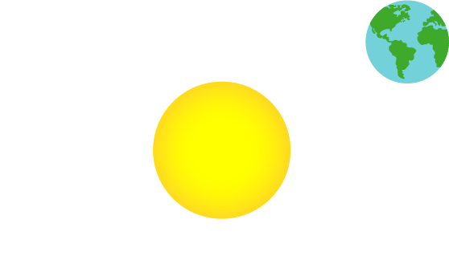
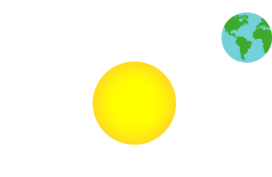

|  |
Revolusi Bumi adalah gerakan bumi mengitari Matahari, yang berlangsung selama periode 1 tahun penuh sampai kembali ke titik awalnya.
|  |
Rotasi Bumi adalah gerakan bumi berputar pada porosnya, dari arah barat ke timur, dan memerlukan periode waktu selama kurang lebih 24 jam.
| Kembali |